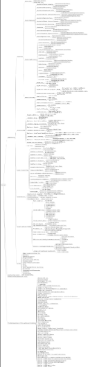
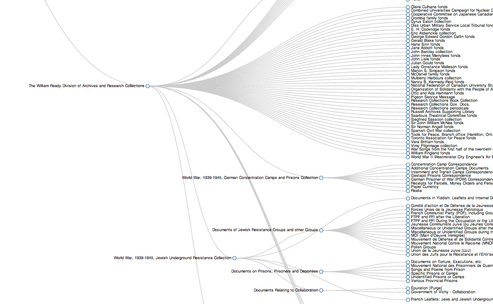
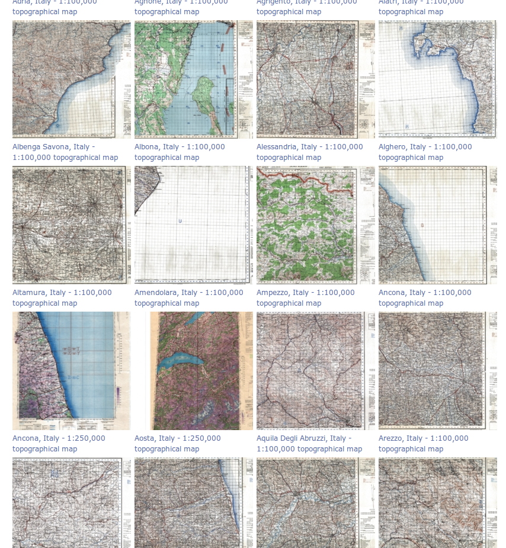
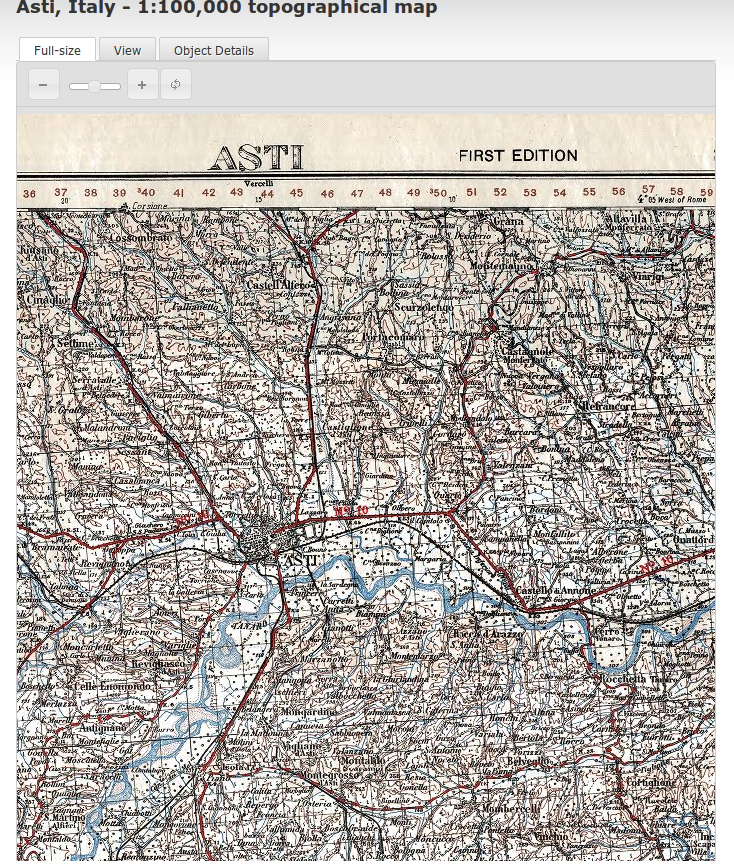

This is the repository for McMaster University Libraries presentation for OLA Superconference 2012, "A Digital Scholarship Centre? What is that!", presented on February 2nd, 2012 by Dale Askey, John Fink and Nick Ruest.
A Digital Scholarship Centre? What is that!?
THIS IS WHERE DALE'S SLIDES START
John Fink
Digital Scholarship Librarian
Relax and breathe. Intro yourself.
Computing Infrastructure
- Heavy reliance on VMs
- Keep administration agile
Could not do this with standard admin. Note that some work scenarios demand that outside parties have access (even root!) with inside machines: using VM insures that we can provide that if needed. Also, ~10-15 minutes to spin up a completely new machine ready to go, can't beat that.
Right now this means
- KVM for VMs
- .deb based Linux distributions
- sysadmin through cherry-pick or clusterssh
KVM is a particular kind of Linux virtualization technology that requireshypervisor support in hardware. .deb is because I am a Debian fascist. Explain clusterssh. Designed for my comfort.
This is not terribly scalable
- Puppet/Chef for VM admin
- Maybe other OSs
I am one guy and am not undergoing cellular mitosis. So at this point we are sort of OK, but scaling beyond is going to get hard. What's stopping me? laziness. Puppet/Chef are new. Laziness will always be a driver, so at the point where it's more lazy to use Puppet or Chef than do things clusterssh, I will switch.
grad and faculty relationship
- (initially) Concentrate on underserved populations
- At Mac this means humanities grad students, humanities in general
At McMaster sadly enough historically most of the attention has been on STEM. However this is also AWESOME really because underserver population = a market that will think you are wonderful for helping them out. Grad students especially.
sla writing
- Documentation, documentation, documentation
This is hard. It's part of that plumbing thing that needs being done but is distinctly unsexy and a bit of a slog. But without it, people (can/(will?)) just roll right over you. Have a structure document is important. Deciding on that structure doco has to (like a lot of stuff) be a collaborative endeavour. Documentation is (almost) always the thing that gets done as an afterthought.
services
- Physical services
- Virtual services
Hey, man, this is a service profession innit? Still here, even with this.So we're planning on having in-person consults, some species of regular office hours, as well as being available online.
where do we stop or start with a project?
- ...
We're still really figuring this out. It's both a good and a bad thing. Early on, it's really great to cast your net as wide as possible, get some projects under your belt so you have something to point to, but later on if (when!) you get super popular, this becomes less scalable and that's where the SLA comes in.
github
- Already a site for a lot of DH development
- Scholarslab, CHNM
- Visibility!
Source code as the new peer review. This is an easy way we can demonstrate our utility as well as give back and make a name for ourselves generally. Viz CHNM, with Zotero, etc. VERY important that we have license flexibility (DFSG compliant) as we'd like to default to an open source license (as part of SLA? maybe). github is pre-eminent source code hosting service. http://github.com/scds/ We did our slide deck there, f'rinstance. I sometimes elevator-speech it as "Google Docs on steroids".
version control evangelism
- Anything iterative and text based...
- ... and everything should be iterative and text based
- provides portability, flexibility, history tracking
- Surprisingly, this is a new concept to many academic tech types
We will try to be flexible on many fronts -- languages, operating systems, service hours and service levels, but I would like to stick with one standard for documenting and sharing code. We've been using git for a while. Having documented changes and distributed backups of stuff is a Good Idea. BUT doing version control -- not just git, any VC -- requires a major rethinking of workflow and may be a harder sell to more conservative types.
project management
- Sort of like a reference interview
- Redmine as project management software
A lot of times clients think they know what they need but maybe they're not 100%. That's part of what PM is, working out specs. Mention tribulations with Ali/Sevigny project. Most/(All?) of our projects also live on an internal bug tracker (Redmine) that also functions as project management software and might/will/possibly function also as CRM system too.
Contact info
- email: john.fink@gmail.com
- twitter: adr
- github: http://github.com/adr
I am an odd duck.
 I don't really fit in anywhere, but I fit in everywhere?
I don't really fit in anywhere, but I fit in everywhere?
A position like mine does not fit perfectly into any single traditional library department. I like to joke that I have a lot of feet since I have a foot in nearly every department. I have a natural connection to IT given the tech behind most of what I do. But, at its heart, digital collections/preservation is just another form of collection development. I've bounced around a few departments over my time at Mac, but I think I have finally found a home in the centre. It is the best possible scenario at this point.
INFRASTRUCTURE
- Digitization
- Digital Respository
- Digital Preservation
one of my standard phases at work is INFRASTRUCTURE! Given that when I started at Mac there was nearly zero infrastructure for digitization or repository structure, we had to basically start from scratch. Over the last few years we have built some decent infrastructure for digitization. We have a hosted institutional repository from Bepress (DigitalCommons) and we have the begun the work of building a solid local digital repository with Fedora Commons and Islandora. We're also slowly working on policy and best practices for digital preservation.
Digitization
- Local projects
- Jewish Underground Resistance collection
- World War, 1939-1945, German Concentration Camps and Prisons collection
- Peace and War in the 20th Century
- Historical Perspectives on Canadian Publishing
- Masters and PhD theses
- Book scanning
Digitization is one thing we are really good at. We have digitized an insane amount of materials over the last few years. But, the problem is a lot of it isn't publically available. This should begin to change very soon with the new digital repository. These are some local projects we have completed or are still ongoing. talk about each project briefly.
Digitization
- Partnerships
- Adam Matthews
- World War I collections (~20k objects)
- Gale
- Holocaust and Jewish Resistance materials (~26k objects)
- Pamphlet collections (starts in Febuary 2012
- Adam Matthews
besides or local projects, we have partnered with a couple of vendors to digitize entire collections. Normally hearing the word vendor partnership is something I would immediately scoff at, but these partnerships are not too bad when you think about them. talk about each partnership briefly.
Digitization
- Challenges
- Growing fast
- Infrastructure
- Public
- Repository
- Digital Preservation
- Staffing
As I previously touched on, in terms of digitization we have grown very quickly. This has caused a number of issues in regards to infrastrutre. Yes, we may have scanned a couple thousand books - but are they publically available? NO. What is needed is a health balance between digitization and infrastructure. What I mean by infrastructure is having a repository to put all this stuff and make it publicly available. Thousands upons thousands of digital objects sitting on a storage arrays is of no use to anybody, and presents any number of issues in regards to digital preservation. What is truly needed is proper staffing, hardware infrastructure, and repository platform combined with some robust workflows and policy. None of which is easy in a spartan environment.
Digital Repository
architecting a digital repository




Digital Preservation
- Documentation
- Documentation
- Documenation
- Documentation
- Policy
- Policy
- Policy
- Policy
- Technical stuff
- Infrastructure
- Code
- THE COMMUNITY IS YOUR BEST FRIEND!
I don't have time to go into a full blown digital preservation talk here, so I will keep it really brief. At its heart, digital preservation is a series or organizational changes. Your organization must be commited to these changes in practice else all will be for naught. So, basically there will be a lot of documentation. Document everything you do. Documention every change to a object, and transaction with that object. Policy-wise, all of your digital preservation practices must be tied to some sort of organization policy. Something to fall back on. And, as for the technical stuff, you need a solid infrastructure. A repository, and microservices to take care of the tedious nitty-gritty stuff like automatically converting tifs to jpeg2000s upon ingest. There is a wonderful community around all of this, and it is without a doubt your bestfriend.
Support
What can the repo do or provide?
- APIs
- Text and data to analyze
- Harvesting
Give the case scenario of PW20C vs. Virtual musuem of the holocaust and resitance.
Education & Knowledge Sharing
- Ingest
- Digital Preservation
- Harvesting
- Metadata
- Best practices
- Project management
- Version control
Policy on what is required to ingest a collection into the repository - this is minumum requirements for objects and associated metadata. Consulting on best practices for digital preservation for a project, our us taking ownership of the objects. Harvesting - knowledge sharing about what harvesting is, and what can be done with it. Metadata - best practices, and guidance for setting up metadata requirements for a project. Best practices is just a catch all for everything that doesn't neatly fall into one of these areas. Project management - Guidance and knowledge sharing on project management. We've all had our hands in a number of projects, and lead our fair share. Here we share our best practices and can provide a sort of mentoring role, or actual project lead. Version control - John touched on this earlier, but we are huge version control advocates, specifically git. We can provide a lot of support and guidance in transitioning a project to version control, or from another system to git, or just the odd git question.
Contact info
- email: ruestn@mcmaster.ca
- twitter: ruebot
- github: http://github.com/ruebot
- macrepo visualization: http://ruebot.net/macrepo-visual/index.html
THIS IS WHERE NICK'S SLIDES START
I am an odd duck.
I don't really fit in anywhere, but I fit in everywhere?
A position like mine does not fit perfectly into any single traditional library department. I like to joke that I have a lot of feet since I have a foot in nearly every department. I have a natural connection to IT given the tech behind most of what I do. But, at its heart, digital collections/preservation is just another form of collection development. I've bounced around a few departments over my time at Mac, but I think I have finally found a home in the centre. It is the best possible scenario at this point.
INFRASTRUCTURE
- Digitization
- Digital Respository
- Digital Preservation
one of my standard phases at work is INFRASTRUCTURE! Given that when I started at Mac there was nearly zero infrastructure for digitization or repository structure, we had to basically start from scratch. Over the last few years we have built some decent infrastructure for digitization. We have a hosted institutional repository from Bepress (DigitalCommons) and we have the begun the work of building a solid local digital repository with Fedora Commons and Islandora. We're also slowly working on policy and best practices for digital preservation.
Digitization
- Local projects
- Jewish Underground Resistance collection
- World War, 1939-1945, German Concentration Camps and Prisons collection
- Peace and War in the 20th Century
- Historical Perspectives on Canadian Publishing
- Masters and PhD theses
- Book scanning
Digitization is one thing we are really good at. We have digitized an insane amount of materials over the last few years. But, the problem is a lot of it isn't publically available. This should begin to change very soon with the new digital repository. These are some local projects we have completed or are still ongoing. talk about each project briefly.
Digitization
- Partnerships
- Adam Matthews
- World War I collections (~20k objects)
- Gale
- Holocaust and Jewish Resistance materials (~26k objects)
- Pamphlet collections (starts in Febuary 2012
- Adam Matthews
besides or local projects, we have partnered with a couple of vendors to digitize entire collections. Normally hearing the word vendor partnership is something I would immediately scoff at, but these partnerships are not too bad when you think about them. talk about each partnership briefly.
Digitization
- Challenges
- Growing fast
- Infrastructure
- Public
- Repository
- Digital Preservation
- Staffing
As I previously touched on, in terms of digitization we have grown very quickly. This has caused a number of issues in regards to infrastrutre. Yes, we may have scanned a couple thousand books - but are they publically available? NO. What is needed is a health balance between digitization and infrastructure. What I mean by infrastructure is having a repository to put all this stuff and make it publicly available. Thousands upons thousands of digital objects sitting on a storage arrays is of no use to anybody, and presents any number of issues in regards to digital preservation. What is truly needed is proper staffing, hardware infrastructure, and repository platform combined with some robust workflows and policy. None of which is easy in a spartan environment.
Digital Repository
check out the infograph here: http://ruebot.net/macrepo-visual/index.html
Digitial Preservation
- Documentation
- Documentation
- Documenation
- Documentation
- Policy
- Policy
- Policy
- Policy
- Technical stuff
- Infrastructure
- Code
- THE COMMUNITY IS YOUR BEST FRIEND!
I don't have time to go into a full blown digital preservation talk here, so I will keep it really brief. At its heart, digital preservation is a series or organizational changes. Your organization must be commited to these changes in practice else all will be for naught. So, basically there will be a lot of documentation. Document everything you do. Documention every change to a object, and transaction with that object. Policy-wise, all of your digital preservation practices must be tied to some sort of organization policy. Something to fall back on. And, as for the technical stuff, you need a solid infrastructure. A repository, and microservices to take care of the tedious nitty-gritty stuff like automatically converting tifs to jpeg2000s upon ingest. There is a wonderful community around all of this, and it is without a doubt your bestfriend.
Support
What can the repo do or provide?
- APIs
- Text and data to analyze
- Harvesting
Give the case scenario of PW20C vs. Virtual musuem of the holocaust and resitance.
Education & Knowledge Sharing
- Ingest
- Digital Preservation
- Harvesting
- Metadata
- Best practices
- Project management
- Version control
Policy on what is required to ingest a collection into the repository - this is minumum requirements for objects and associated metadata. Consulting on best practices for digital preservation for a project, our us taking ownership of the objects. Harvesting - knowledge sharing about what harvesting is, and what can be done with it. Metadata - best practices, and guidance for setting up metadata requirements for a project. Best practices is just a catch all for everything that doesn't neatly fall into one of these areas. Project management - Guidance and knowledge sharing on project management. We've all had our hands in a number of projects, and lead our fair share. Here we share our best practices and can provide a sort of mentoring role, or actual project lead. Version control - John touched on this earlier, but we are huge version control advocates, specifically git. We can provide a lot of support and guidance in transitioning a project to version control, or from another system to git, or just the odd git question.